Calas de aguas turquesas, Serra de Tramuntana y la magia de la isla más grande de las Baleares
Mallorca es la isla más grande y diversa de las Baleares. Ofrece una combinación única de calas vírgenes de aguas turquesas, la impresionante Serra de Tramuntana (Patrimonio de la Humanidad por la UNESCO), pueblos de montaña con encanto, ciudades históricas como Palma y una gastronomía que enamora.
Esta guía de 7 días te llevará por los lugares más espectaculares de Mallorca: Palma y su Catedral (La Seu), la Serra de Tramuntana con pueblos como Valldemossa, Deià y Fornalutx, las calas del sureste (Cala Mondragó, Caló des Moro, Cala s'Almunia), la península de Formentor, las Cuevas del Drach y los pueblos del interior como Alcúdia y Pollença. Alquilar un coche es imprescindible para descubrir las calas más escondidas y recorrer la sierra.
---Mi recomendación personal es dividir el alojamiento en 2 o 3 zonas para no perder tiempo en desplazamientos. Por ejemplo: 2 noches en Palma (para visitar la capital), 2 noches en la Serra de Tramuntana (Valldemossa o Deià) y 2 noches en Alcúdia o Cala d'Or (para playas y calas).
🚗 Coche en Mallorca: Es ABSOLUTAMENTE IMPRESCINDIBLE. Las calas están dispersas por toda la isla y el transporte público no llega a las más bonitas. Reserva con antelación, especialmente en temporada alta.
🚲 Bicicletas en Mallorca: Mallorca es un paraíso para el ciclismo. Hay muchas rutas señalizadas, especialmente por la Serra de Tramuntana. Se pueden alquilar bicicletas (15-30€/día) de montaña o de carretera.
🚫 Zonas a evitar: Mallorca es una isla muy segura. Evita las calas masificadas en horas punta (Cala Mondragó, Caló des Moro, Formentor) y ve muy temprano (antes de las 9am).
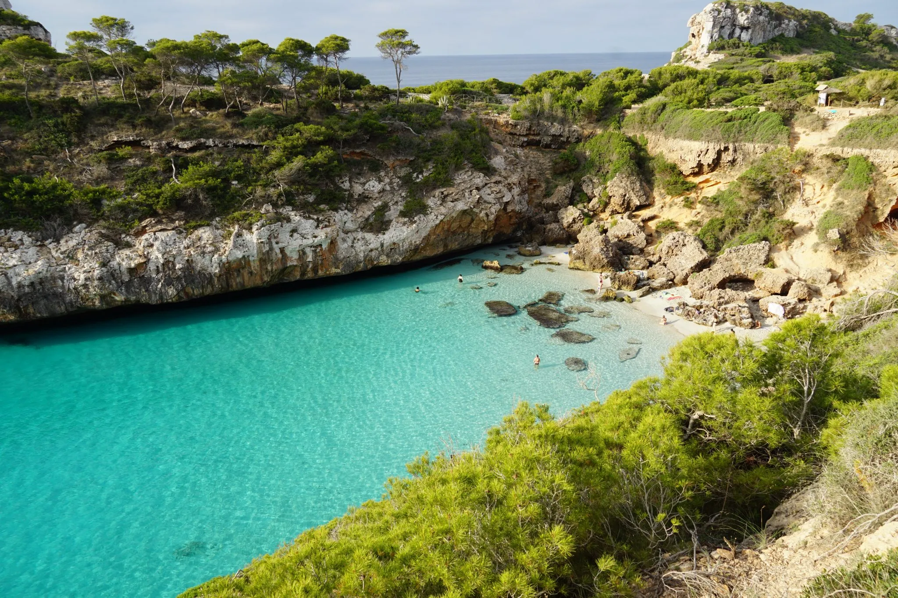
Caló des Moro y Cala s'Almunia son dos pequeñas calas situadas en la costa sureste de Mallorca, cerca de Santanyí. Son las calas más fotografiadas de la isla por sus aguas turquesas y cristalinas y sus acantilados. Caló des Moro es una pequeña playa de arena blanca rodeada de rocas. Cala s'Almunia es una cala de piedras con casetas de pescadores.
El acceso es caminando (10-15 minutos desde el aparcamiento) por un sendero de tierra. El aparcamiento es gratuito pero muy pequeño (llega antes de las 8:30am). No hay servicios (lleva agua y comida). Es ideal para el snorkel. Son calas muy pequeñas, por lo que se llenan rápido.
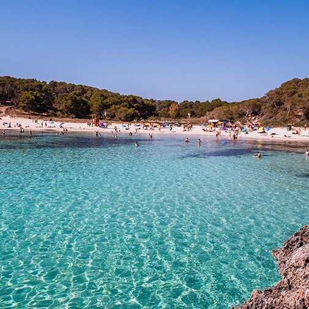
Cala Mondragó es la playa principal del Parque Natural de Mondragó, en la costa sureste de Mallorca. Es una playa de arena blanca y fina, rodeada de pinos y dunas, con aguas turquesas y cristalinas. El parque también incluye Cala S'Amarador y Cala de ses Fonts de n'Alis.
El acceso es fácil (aparcamiento de pago, 5-10€). Hay un chiringuito (caro) y servicio de alquiler de hamacas. El parque tiene rutas de senderismo señalizadas. Es una playa muy popular, así que llega antes de las 9am en verano. Ideal para familias.
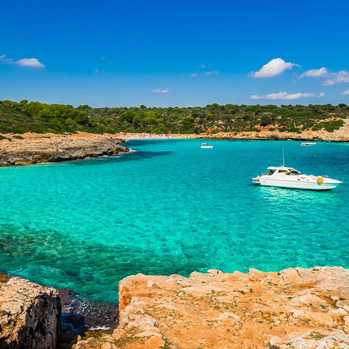
Cala Varques es una cala virgen situada en la costa este de Mallorca, cerca de Porto Cristo. Es famosa por su arco rocoso natural (un agujero en la roca) y sus aguas turquesas y cristalinas. Es una playa de arena blanca rodeada de pinos.
El acceso es caminando (15-20 minutos desde el aparcamiento) por un sendero de tierra. El aparcamiento es gratuito pero pequeño (llega temprano). No hay servicios (lleva agua y comida). Es ideal para el snorkel. Es una cala menos masificada que otras del sur.
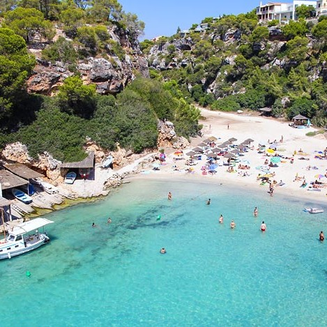
Cala Pi es una pequeña cala situada en la costa sur de Mallorca, cerca de Llucmajor. Es famosa por su forma de "agujero" rodeado de acantilados y por sus aguas turquesas y cristalinas. Es una playa de arena blanca.
El acceso es por unas escaleras empinadas (100 escalones). El aparcamiento es gratuito (pero pequeño). Hay un chiringuito (caro). Es una cala muy popular, así que llega temprano. Es ideal para el snorkel.
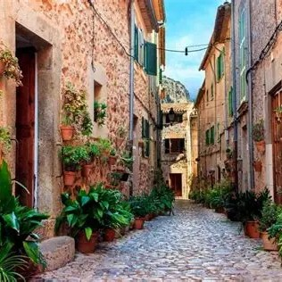
Valldemossa es uno de los pueblos más bonitos de Mallorca, situado en plena Serra de Tramuntana. Es famoso por su Cartuja (Real Cartuja de Jesús de Nazaret), donde vivieron el rey Sancho de Mallorca y más tarde el compositor Frédéric Chopin y la escritora George Sand en el invierno de 1838-39.
El casco histórico es un laberinto de calles empedradas y casas de piedra. No te pierdas la iglesia de la Cartuja, las celdas de Chopin y la farmacia antigua. También son famosas las "cocas de patata" (dulce típico). Es un pueblo muy turístico, pero merece mucho la pena.
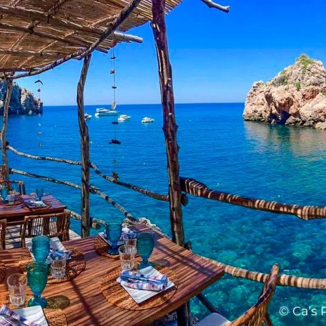
Deià es un pequeño pueblo de la Serra de Tramuntana, famoso por haber sido hogar del escritor y premio Nobel Robert Graves (su casa es ahora un museo). Es un pueblo de artistas, con galerías de arte, talleres y un ambiente bohemio.
El pueblo está construido en la ladera de una montaña, con vistas espectaculares al mar. No te pierdas la iglesia de San Juan Bautista (con un cementerio con vistas al mar), la Casa de Robert Graves y Cala Deià (una pequeña cala de piedras). Es un pueblo tranquilo y con mucho encanto.
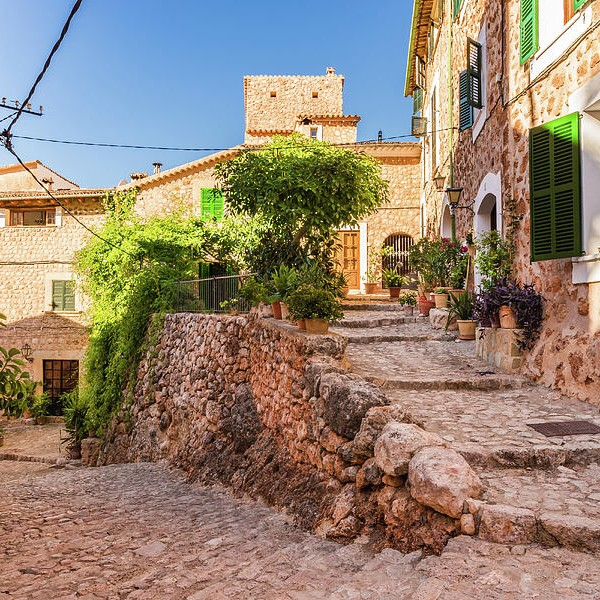
Fornalutx es un pequeño pueblo de la Serra de Tramuntana, considerado uno de los pueblos más bonitos de España. Está construido en la ladera de una montaña, con casas de piedra y calles empedradas y empinadas.
El pueblo es muy tranquilo y auténtico. No te pierdas la plaza major (con un árbol centenario), la iglesia de la Natividad y las vistas al valle de Sóller. Es un pueblo perfecto para pasear y perderse por sus calles. Cerca está el Puerto de Sóller y Sóller.
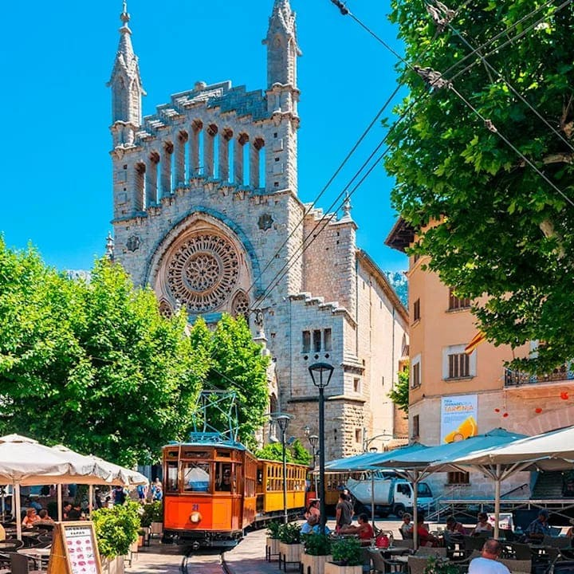
Sóller es un pueblo del valle rodeado de montañas y naranjos. Es famoso por su Ferrocarril de Sóller, un tren de madera de 1912 que conecta Palma con Sóller a través de la Sierra de Alfàbia (un trayecto espectacular de 1 hora). También tiene un tranvía que conecta Sóller con el Puerto de Sóller.
El casco histórico de Sóller es bonito, con la iglesia de Sant Bartomeu (modernista) y la plaza de la Constitució. El Puerto de Sóller es una cala urbana con encanto, rodeada de montañas. Es un lugar muy turístico, pero el tren es una experiencia única.
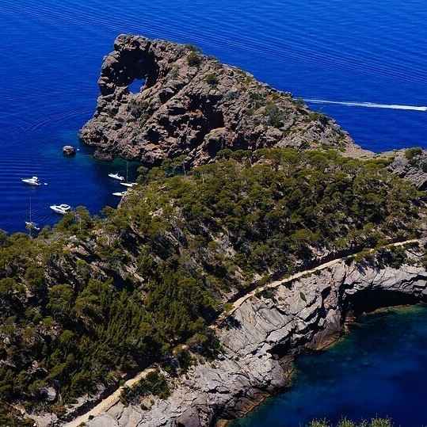
Sa Foradada es un famoso mirador situado en la costa de la Serra de Tramuntana, cerca de Deià. Es un agujero natural en una roca que se adentra en el mar. Las vistas desde el mirador son espectaculares: el mar turquesa, los acantilados y la costa de la sierra.
El acceso es caminando (30 minutos desde el aparcamiento de la carretera MA-10) por un sendero de tierra. El aparcamiento es gratuito pero pequeño. Hay un restaurante en el mirador (caro, pero con unas vistas increíbles). Es uno de los mejores lugares para ver la puesta de sol en Mallorca.
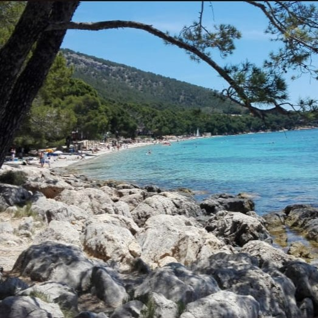
La península de Formentor es el rincón más septentrional de Mallorca. La carretera MA-2210 es una de las más espectaculares de la isla, con curvas y miradores impresionantes (Es Colomer, Mirador de la Creueta). Al final está el Faro de Formentor (entrada gratuita), con vistas de 360°.
En la península también está la Playa de Formentor (arena blanca y aguas turquesas) y Cala Figuera (una cala pequeña). En verano el acceso está restringido (hay que coger un autobús lanzadera desde Port de Pollença). Es uno de los lugares más turísticos de Mallorca.
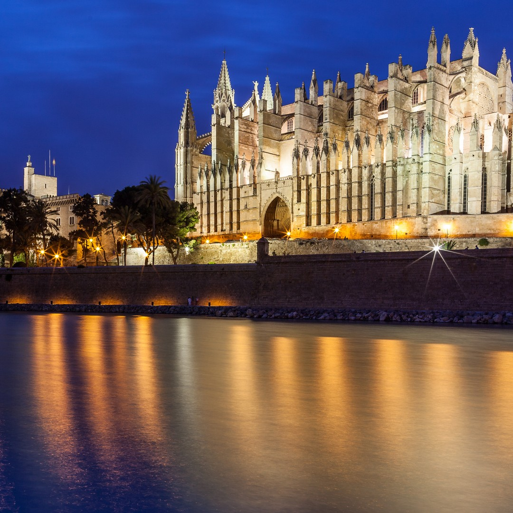
Palma es la capital de Mallorca. Su principal atractivo es la Catedral de Santa María de Palma (La Seu), una obra maestra del gótico mediterráneo. Su rosetón es uno de los más grandes del mundo (13 metros de diámetro). La catedral se asoma al mar y domina la bahía de Palma.
Junto a la catedral están el Palacio Real de la Almudaina (antigua fortaleza árabe, residencia de los reyes de España), los Baños Árabes y el Paseo del Borne. El centro histórico (calles de Sant Miquel, Apuntadores, Sant Feliu) es un laberinto de callejuelas con tiendas, bares y restaurantes. También merece la pena el Castell de Bellver (castillo circular con vistas a la bahía).
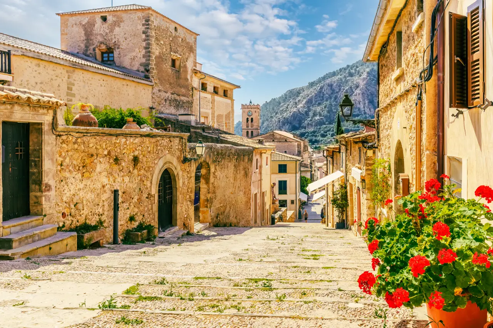
Alcúdia conserva uno de los cascos históricos amurallados mejor conservados de Mallorca (murallas del siglo XIV). Dentro de las murallas se encuentra la ciudad romana de Pollentia (con un pequeño teatro romano y un foro). Es un pueblo con mucho encanto.
Pollença, más al interior, es famosa por su Calvari (una escalinata con 365 escalones que sube a una capilla en lo alto de una colina) y por su plaza mayor (Plaza Major) con cafés y restaurantes con encanto. Es un pueblo más tranquilo que Alcúdia.
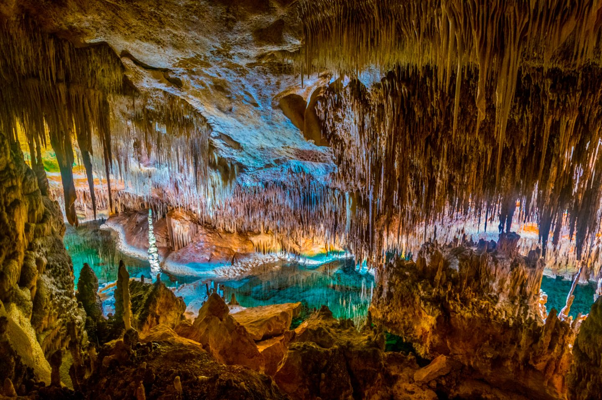
Las Cuevas del Drach (Coves del Drac) son uno de los atractivos más famosos de Mallorca. Están situadas en Porto Cristo, en la costa este. Se recorren unos 1.200 metros de cuevas subterráneas hasta llegar al Lago Martel, uno de los lagos subterráneos más grandes del mundo (170 metros de largo).
La visita incluye un pequeño concierto de música clásica mientras navegan barcas por el lago. La entrada cuesta 16€. Hay que comprar entrada con antelación (especialmente en verano). También se pueden visitar las Cuevas dels Hams, cercanas y también muy bonitas.
Mallorca es una isla grande y diversa. No intentes abarcarlo todo en pocos días. Dedica al menos 5-7 días para poder disfrutar de las calas, la Serra de Tramuntana y los pueblos con calma. Las calas del sureste (Caló des Moro, Cala Mondragó) son las más famosas, pero el norte (Formentor, Cala Figuera) y el este (Cala Varques, Cala Romántica) también son espectaculares.
El GR-221 (Ruta de Pedra en Sec) es una de las mejores formas de descubrir la Serra de Tramuntana. Se pueden hacer tramos cortos (3-5 km) sin necesidad de hacer toda la ruta. Lleva agua y protección solar.
La ensaimada es el dulce más típico de Mallorca. La mejor ensaimada del mundo se hace en Ca'n Pons (Es Mercadal, Menorca), pero en Mallorca también hay buenas pastelerías. El pa amb oli (pan con aceite, tomate y embutido) es el desayuno más típico.
{kind=link}
{kind=link}
{kind=link}
{kind=link}
{kind=link}
{kind=link}
{kind=link}
{kind=link}
{kind=link}
{kind=link}
{kind=link}
{kind=link}
{kind=link}
{kind=link}
{kind=link}
{kind=link}
{kind=link}
{kind=link}
{kind=link}
{kind=link}